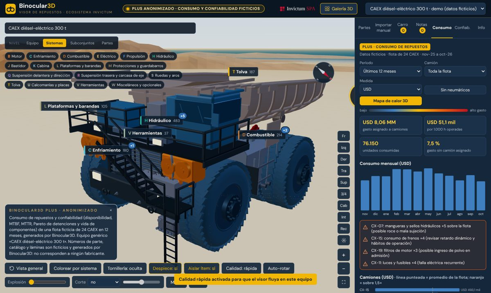
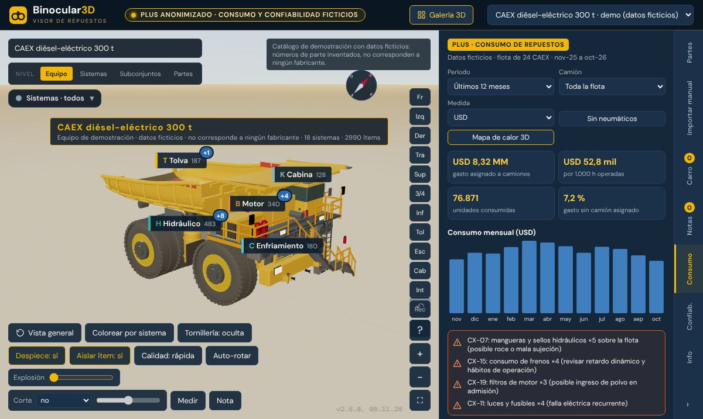
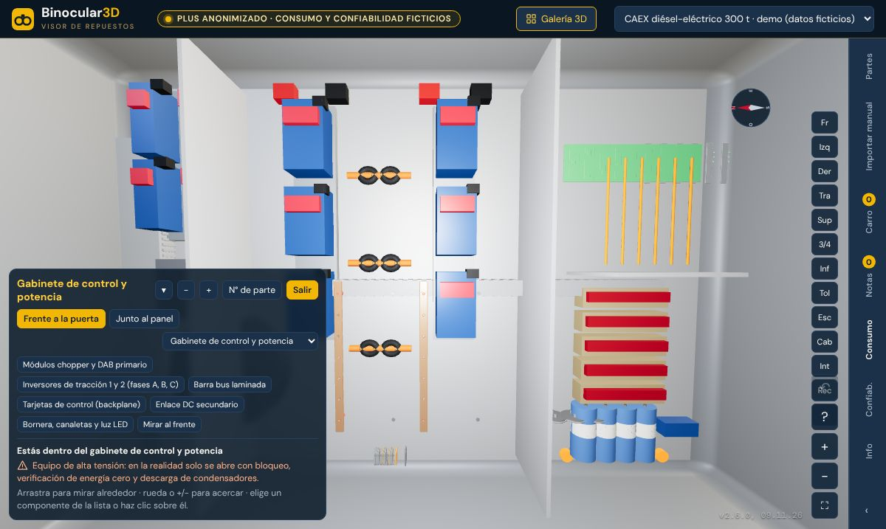

Equipos mineros en 3D
Binocular3D Plus convierte el manual de partes de un camión de extracción en un modelo 3D navegable. Empiezas con la vista general y, al acercarte, aparecen los sistemas, los subconjuntos y cada número de parte. La versión Plus suma el consumo de repuestos y la confiabilidad de la flota sobre el mismo modelo.
Demostración con un CAEX diésel-eléctrico genérico de 300 t y datos ficticios. Funciona en el navegador, sin instalar nada.

Cómo funciona
Como al acercarse en un mapa, cada nivel muestra más detalle. Cada elemento del modelo está enlazado con su lámina y su lista de partes.
Vista general para girar, acercar y orientarse. La brújula indica el norte.
Motor, propulsión, hidráulico, frenos, eléctrico, cabina, tolva y más, con colores por sistema.
Grupos del manual ubicados sobre el modelo, con sus láminas.
Número de parte, descripción y cantidad, listos para el carro de compra o una nota.
Funciones
Todo lo de la versión estándar, más dos pestañas de gestión de flota.
Rotación, zoom, cortes, despiece, aislamiento de ítems y búsqueda por número de parte.
Entra a la cabina y a los gabinetes de control, auxiliar 24 V, frenos y parrillas de retardo, con cada componente identificado.
Inspección guiada con lista de chequeo, puntos de servicio, flujo de energía y luces del tablero.
Pautas y reparaciones que reúnen los repuestos necesarios y los agregan al carro de una vez.
Ejercicios con cronómetro y medallas para aprender dónde está cada componente, recorriendo el equipo a pie.
Carga un manual de partes en PDF y el visor lo ordena por sistemas y subconjuntos.
Gasto por camión, sistema y mes, con mapa de calor 3D sobre el modelo y alertas de consumo anómalo.
Disponibilidad, MTBF, MTTR, Pareto de detenciones y vida de componentes (Weibull) por flota y por camión.
El carro entrega un PDF con el listado de repuestos y las hojas del manual con cada repuesto destacado, para descargar o enviar por correo o WhatsApp.


Versiones
La versión Plus incluye todo lo de la estándar y agrega la gestión de consumo y confiabilidad.
| Función | Estándar | Plus |
|---|---|---|
| Visor 3D con drill-down, cortes, despiece y búsqueda | ✓ | ✓ |
| Interiores, recorridos, recetas, misiones y modo caminar | ✓ | ✓ |
| Importar manual, carro con solicitud en PDF y notas | ✓ | ✓ |
| Consumo de repuestos y mapa de calor 3D | — | ✓ |
| Confiabilidad: MTBF, MTTR, Pareto y Weibull | — | ✓ |
Para empezar
Datos de demostración. El equipo es un CAEX diésel-eléctrico genérico de 300 t, modelado por INVICTUM SpA. Los números de parte, el catálogo, las láminas y los datos de consumo y confiabilidad son ficticios y no corresponden a ningún fabricante ni a ninguna faena. Binocular3D no está afiliado a ningún fabricante de equipos. Ver términos de uso y aviso de privacidad.
INVICTUM SpA carga los manuales de partes de tus equipos y los datos de tu flota en una versión privada.